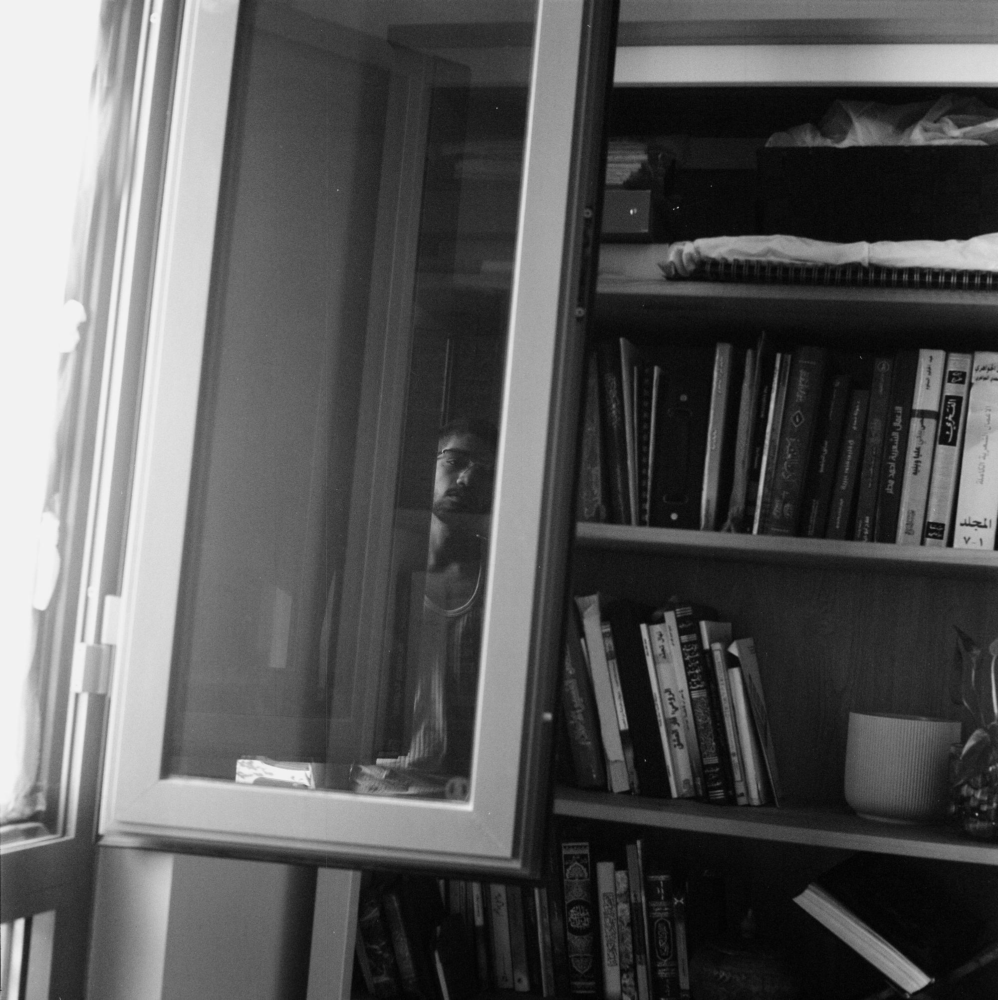

Redha Al Hammad is a Saudi photographer and aspiring new media designer. Redha spent his early childhood in Adelaide, South Australia before moving to the UAE at the age of nine. His photographic work engages with his environment and centers around themes of homeliness, absence and interpersonal connection. Lately, Redha has been focused on grounding his practice with a foundation of cultural, familial and religious values. He is a student at New York University Abu Dhabi.
email: redhaalhammad@gmail.com
instagram: @rdhlhmmd